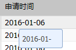
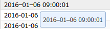

在IE8下和IE11下或者使用混乱模式下的留了浏览器，有数字和符号同时存在飘浮窗口(gird单元格提示飘浮，form表单验证飘浮)会出现断行的情况
针对这各飘浮提示增加强制不换行：可能会引起别的异常，因为有些提示太多了的话是需要换行的
在主css中加入
.x-list-plain{white-space:nowrap!important;}/*form表单验证飘浮*/
.x-tip-body-default{white-space:nowrap!important;}/*grid单元格提示飘浮*/
可能会的异常
转义所有的符号如2016-01-20 09:10:20
转义后
处理后效果：
